You said the hair was still drawn in the old fat pixels. You were right, and the first number I took said you were wrong. That number was measuring the OUTLINE of the haircut, and the outline is not the haircut. Measuring the INSIDE instead: 9 of your 15 haircuts had nothing in them at all, one flat colour with a dark rim and no strand, parting or break anywhere. That is what the old small canvas could hold and nothing more. Now none are like that: 47 one-pixel marks across all the hair before, 820 now. The parting drifts by a pixel as it runs so it is a strand and not a ruled line, and it is worked out from the haircut's name so the same style comes out the same every time and nobody in a crowd shimmers. Nothing got thinner and no shape moved. LOOK tab for this picture, CHARACTER tab for the hair.THE SIDE VIEW, FIXED
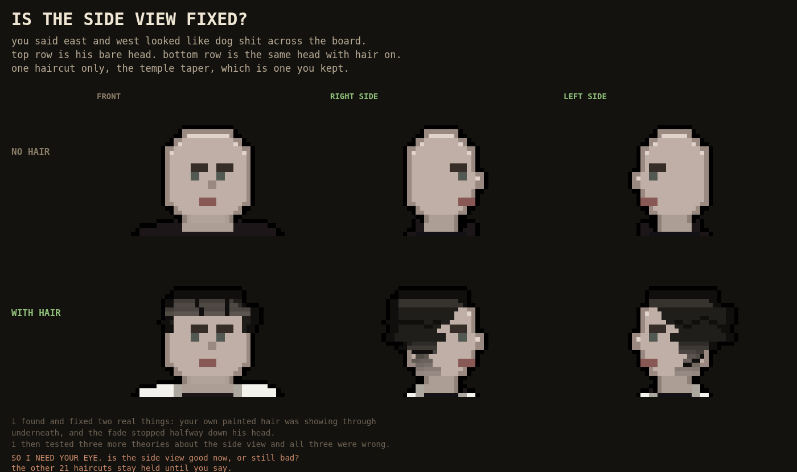
ANSWERED 8/25: "the side view is a lot better east and west." The hold on the other 21 haircuts is LIFTED. What was wrong: the hair was drawing IN FRONT OF HIS FACE. On the rows his eyes, nose and mouth are on, the hair spilled past the front of his face and hung in the air there, so every profile read as a helmet with a slot instead of a person. 546 stray pixels across all 15 styles, not one style clean. Now zero. Top row is his bare head, bottom row is the same head with hair on. LOOK tab for this picture, CHARACTER tab for the hair.THE HEM
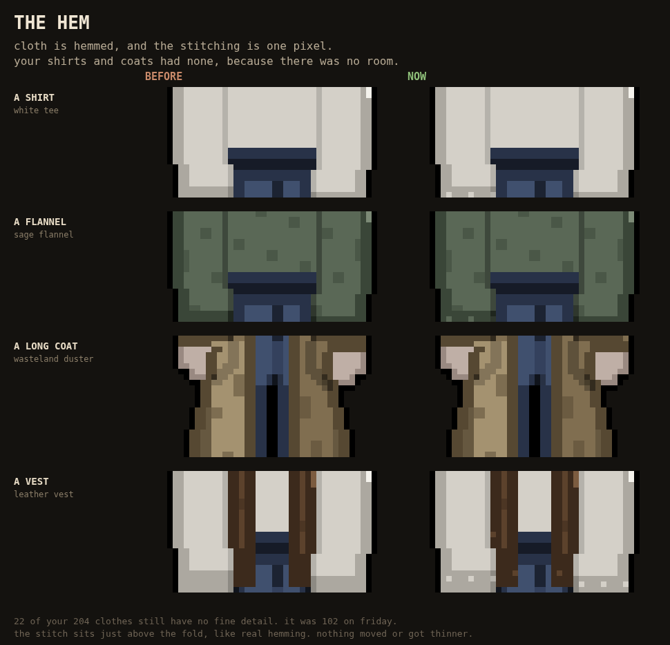
Last big pass on giving your clothes detail the sharper character can hold. Cloth is hemmed and the stitching is one pixel, so your shirts and coats had none because there was no room for it. Shirts went from 50 of 68 with fine detail to 65, coats from 20 of 31 to 27. On Friday 102 of your clothes had no fine detail anywhere. It is 22 now. The stitch sits just above the fold like real hemming, and it picks a tone that contrasts with the cloth, because a stitch you cannot see is not a stitch. Nothing moved and nothing got thinner. LOOK tab for this picture, CLOTHES tab for the clothes.THE HARDWARE
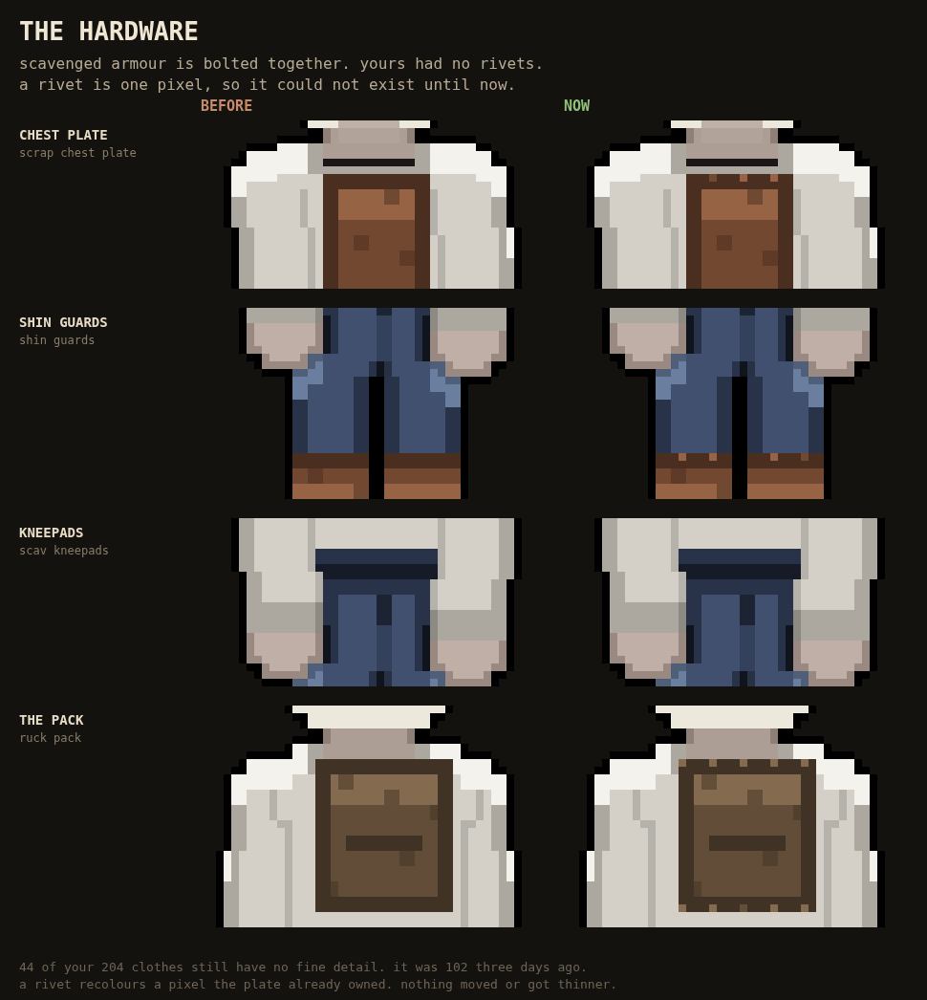
Third pass on giving your clothes detail the sharper character can actually hold. Scavenged armour is bolted together and yours had no rivets, because a rivet is one pixel and one pixel did not exist before. Every gear piece and every pack now gets studs along its plate edges. This is the biggest single jump so far: gear went from 4 of 22 pieces with fine detail to 24 of 26, packs from 3 of 11 to 7 of 11. Three days ago 102 of your clothes had no fine detail anywhere, now it is 44. Nothing moved and nothing got thinner, a rivet just recolours a pixel the plate already owned. LOOK tab for this picture, CLOTHES tab for the gear.THE SMALL THINGS
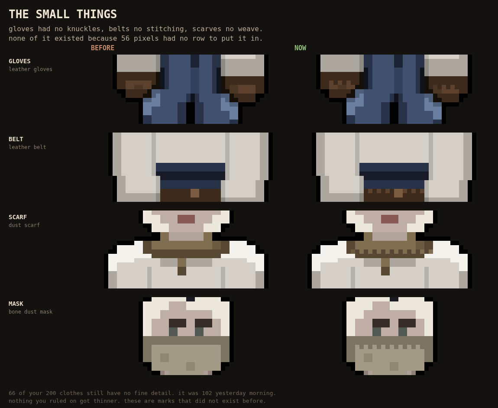
Carrying on from the boots. Your gloves had no knuckles, your belts had no stitching, your scarves had no weave and your masks had no hem, because at the old resolution there was no spare row to put any of it in. All four have one now. This is the same method as the boot stitch and the same rule with it: nothing you already ruled on got thinner, these are marks that did not exist before. 102 of your 200 clothes had no fine detail yesterday morning, 66 do now. Next are the gear pieces and the bags. LOOK tab for this picture, CLOTHES tab for the items.THE BOOTS GOT STITCHING
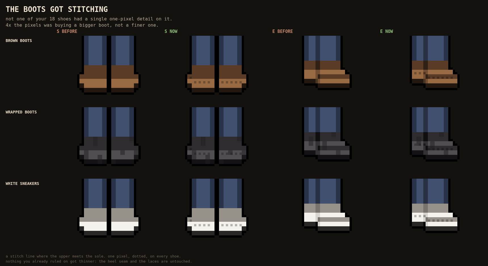
Since the character went to four times the pixels, only his hair had actually been given anything to do with them. I measured the wardrobe and 102 of your 200 canon garments had no one-pixel detail on them anywhere, which means every mark on them was a whole block wide and the extra pixels were buying a bigger boot rather than a finer one. Footwear was the worst: zero of eighteen. So every shoe now has a welt stitch, a single-pixel dotted line where the upper meets the sole, which is the thing real boots have and 56 pixels had no room for. Left is before, right is now, front and side. Nothing you already ruled on got thinner: the heel seam and the laces are exactly as they were. LOOK tab for this picture, CLOTHES tab for the shoes.IT WAS NEVER JUST THE HAIR
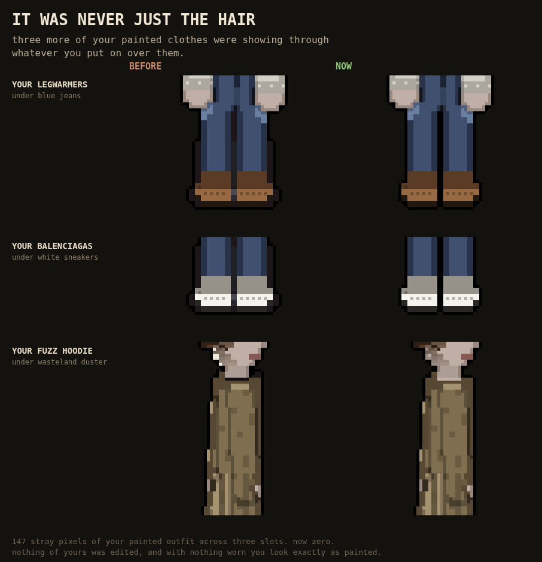
The white blob you spotted on the side of his head was not a hair bug, it was a slot bug, so I went and checked the other eight painted layers the same way. Three more were doing it: your leather legwarmers showing through blue jeans, your Balenciagas through white sneakers, and your fuzz hoodie through the wasteland duster. 147 stray pixels in total, now zero. Be warned these are much smaller and less obvious than the hair blob was, so look at the hips and the boot edges rather than expecting something to jump out. Nothing of yours was edited, and with nothing worn you still look exactly as you painted yourself. LOOK tab for this picture, CHARACTER tab for the clothes.THE WHITE BLOB IN PROFILE
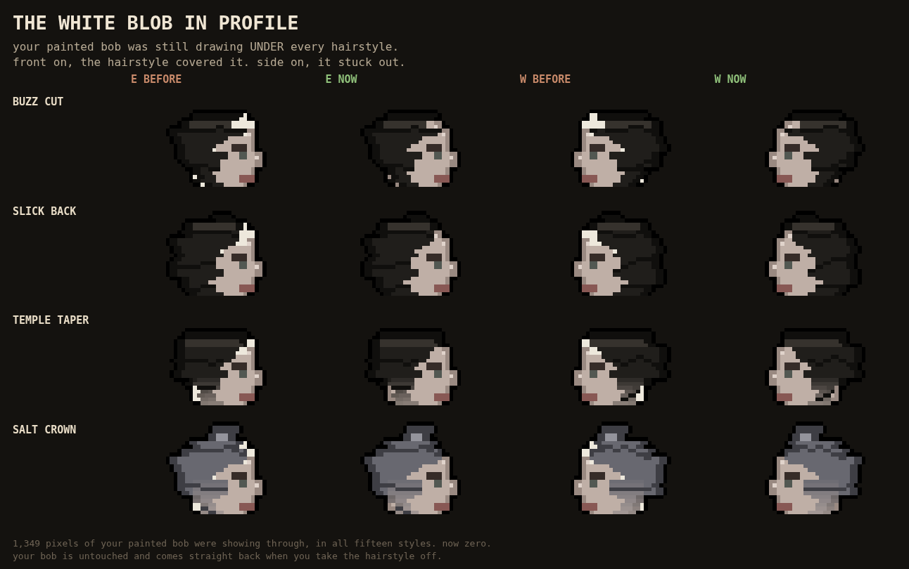
You said to keep fixing east and west hair. Two things were wrong and both were profile only, which is why they survived three weeks of front views. First, your own painted curtain bob was still drawing underneath every hairstyle you put on. Front on, the hairstyle covered it and you could not tell. Side on, your paint reaches two pixels further out than the hairstyle knows about, and the near-white colour in your bob's palette stuck out over the forehead as a bright blob. 1,349 pixels of it across all fifteen styles, now zero. Second, the fade was stopping halfway down the head in profile instead of at the bottom of the hair. Your painted bob is untouched and comes straight back the moment you take a hairstyle off. LOOK tab for this picture, CHARACTER tab for the hair.THE HAIR STOPPED BEING STRAIGHT
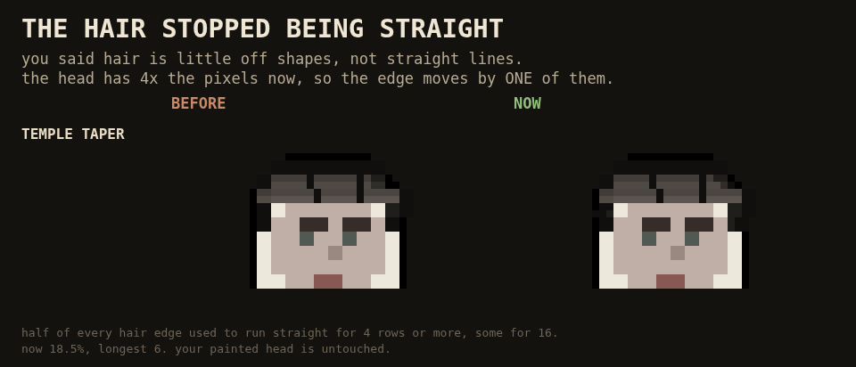
You told me on 8/1 that hair is little off shapes and that I was drawing a lot of straight lines. The fix that day worked, but it moved the edge by a whole block, so when the character went to four times the pixels the hair kept wobbling in the same chunky steps: sharper, not finer. Measured, half of every hair edge was running dead straight for four rows or more and some for sixteen. The edge now moves by a single pixel, which is only possible at the new resolution. 18.5% now, longest run six. Left is the old edge, right is the new one, same generator, same head. Your painted head is untouched. CHARACTER tab for the hair, LOOK tab for this picture.THE KERB AND THE LANE LINEYou said do not forget the proper sidewalks. The sidewalk surface was already your good concrete, but the KERB beside it was wearing the house-yard dirt pool and the LANE LINE was wearing blank asphalt, so the road had no line on it. Both now wear the tiles you approved on 7/14: pale concrete with the panel joints for the kerb, and the thirty-year washed white line for the lane. RUN tab, stand on any big road.IT LOOKS EXACTLY THE SAME: the 4x flip, before and afterYou looked at this and said it looks exactly the same, and you were right, so it shipped. The whole 4x flip had been built and switched off since 8/16 on my judgement that the head came out too square without the upscaler rounding its corners. Measured, the two columns differ on 5.9% of him and only 11% of that is on the head. Left is every build before 8/20, right is what you are playing now: the character is composed at four times the pixels, the upscaler is off, and the black border is one true pixel instead of a doubled one. Your painted art is untouched and still hashes byte for byte. LOOK tab.THE WARDROBE AT 4X: what four times the pixels buys the clothesTwelve garments and two hairstyles, drawn twice at the same size on screen. LEFT is the way the 2x plan was going to ship them: generated at 56 and doubled into 2x2 squares, chunky cloth on a sharp body. RIGHT is the same garment composed natively, so a strap, a fold, a plaid and a cornrow each carry four times the detail. As of 8/20 the right-hand column is what the game draws: the rig is flipped and the wardrobe was made resolution-native the same day. CLOTHES tab is where you wear them; this picture lives in the LOOK tab.HIS SIGNALS, BACK ON THE INTERSECTIONSThe 348-sprite traffic signal set you approved on 7/17 stopped appearing anywhere the day the roads started drawing themselves from their own modules. One flag meant BOTH "this cell is a road" AND "draw it the old way", so turning the second off turned the first off with it, and 274 real intersections lost their signals in silence. Measured at zero draws; here they are. RUN tab.GROUND YOU CANNOT SET YOUR FEET ONLoose ground: ballast, talus, rubble drift. Standing here you cannot brace, so everything physical hits you harder -- and the tip cuts both ways, because you can lead somebody else onto it. Until 8/20 this drew as flat colour and the only thing that told you it was dangerous was a line of text in the corner. Now the floor says it: broken chips, four values, no two pieces alike. RUN tab.THE HOLE: ground you can be thrown intoThe crest of a quarry bench. Until 8/20 this was a WALL -- the deepest hole in the valley was something you bounced off. It is a void now: you cannot walk into it, it does not stop a body thrown at it, and being knocked in is fatal. Drawn darker than the rock it is cut from, because a drop reads as a floor at a different value. RUN tab.THEY LOST YOUPut stone between you and them and the guns do not miss, they turn OFF. One thing decides it -- whether a man can actually see you -- and five separate systems ask it: whether he can hold a bead, whether he may shoot, where he walks, whether he runs for cover, and whether he shouts. A man who loses you walks to WHERE YOU WERE, not to where you are. And the one who can still see you tells everyone within eight tiles, so he is the one worth shooting first. COMBAT tab.THE CARD FITS AGAINFive different systems write onto a person now and the card had quietly grown to 96 percent of your screen -- one more thing and it would have run off the bottom. So the stuff that is true of the WHOLE outfit and never changes (what they want, what they hold, what they pay in) collapses to one line the moment you have done anything for them, because you have already read it. Tap that line and it all comes back. Down to 84 percent. CITY tab, tap somebody you have helped.THEY ARE NOT WAITINGThis is what the free thing was for. You took what the Cartel was offering three times, and now that they count you they are asking -- and they are not waiting for the polite gap between asks, because that gap is for people who do not owe them. Saying no here does not cost you one rung, it costs you one for every favour you took. CITY tab, tap a person.THE FIRST THING IS FREEThe other direction, finally. Some outfits give you something the first time you meet them, it costs you nothing, and that is exactly the part to worry about -- the card starts keeping a tally of what you have taken. Others hand you nothing until they count you, and then it spends the standing you built. One outfit gives nothing to anybody ever. CITY tab, tap a person.THEY ASK YOU BACKOnce an outfit COUNTS you it starts asking, and what it asks for is the thing it already wanted. Saying yes buys you nothing -- it is the rent on being counted. Saying no drops you straight back below counted, and they remember which way you went. CITY tab, tap a person you have done favours for.THE WALL: turning up runs out of roadWalk up to anybody who runs with an outfit and this is their card. You have done what they want five times, and it says so: turning up gets you no further than USEFUL, and COUNTED is not for sale at any number of favours. The only button that passes it is saying out loud that you are with them. CITY tab, tap a person.A PIT DUG IN THE DIRTSomebody dug here. The ground is sunk where the fill settled, the pale heap beside it is the earth that never went back in, and the dark green is growing on what is under it. Bare dirt and sand generate these now. RUN tab.A CLUSTER: they died togetherThe dead come in groups now, not sprinkled one by one. This is what you find in an abandoned block. RUN tab.THE PIT: the cemeteryThey stopped digging graves and dug one hole. The cemetery is a dumping pit now, about 34 bodies in a single heap. RUN tab.THE VISTA: the mountain overlookTHE DEMO MONEY SHOT. Stand on the west rim and the whole valley is laid out below you, drawn by the valley view that already existed. RUN tab, on reaching the overlook.THE DEAD: how thick they lieA wider view of the same ground, so the density reads. Too many, too few, or about right is the only call needed. RUN tab.THE DEAD: the walk-outOpen desert. The ones who walked out and did not make it, thin and scattered, no mummified bodies because nothing out here is sealed. RUN tab.THE DEAD: the road outThe exodus road. Remains on the asphalt where people stopped walking. RUN tab.THE DEAD: a suburban streetBones lying in the open on a suburb street, bleached and scattered by ten years of scavengers. RUN tab.THE BLACK BORDER IS ONE PIXEL NOWHis 8/14 ask: "the black border has to be thinner, like half as thin." It was always drawn as ONE pixel -- but it was drawn on the 56 composition and then DOUBLED by the upscale that takes the frame to 112, so it reached the screen at two. It is now drawn after the upscale and arrives at one. Same body, byte for byte: 0 of ~18,000 non-border pixels changed. CHARACTER tab, and anywhere a person is drawn -- RUN, CITY, COMBAT.THE BLACK BORDER, IN THE GAMEHis 8/14 ask, finished where it counts. The CHARACTER tab got the thin outline first, and the GAME kept doubling it: the city enlarges every body on an integer ladder, so the one pixel came along for the ride and landed 2px thick walking around and 4px zoomed in. The border is now drawn AFTER the enlargement, at the size you actually see it, for the player and every neighbour. RUN tab (and CITY), anywhere a person is drawn.THE SIX PEOPLE ON YOUR STREETYour neighbours used to be YOU, six times, under six random colours -- same body, same clothes, only the hue changed, plus a durag on every third one. Strip the colour and they were six identical silhouettes, which matters because the valley goes DARK: night runs 19:00 to 06:00 and only about 4% of the map has live power, so colour is the one channel you cannot count on (06:00 itself is when night ENDS -- I had that wrong and it is corrected). They are six SHAPES now -- different bodies, different garments, all from the canon wardrobe. TWO OF THEM STILL MATCHED, and the fix was not a new garment: I measured all 202 clothes in the wardrobe for how much each one changes the outline, and the SHOULDER MANTLE moves it four times more than the gap I could not close. It was already in there. The backpack I had given one of them turns out to be invisible from the front, which is the direction you meet somebody in. The two closest neighbours are now three times further apart. The bottom row is the test. RUN tab, walk into a settlement.THE THIRTEEN OUTFITSEvery faction you can join, and you can tell them apart with the colour switched off. That matters because the valley goes DARK: night runs 19:00 to 06:00, and only about 4% of the map has live power, so most streets have no light even by day. Colour is the one channel you cannot count on. (I had been saying the demo OPENS in the dark -- it does not, 06:00 is exactly when night ends. Corrected.) These were not picked by eye: 880 fits were rendered out of clothes that already existed and the thirteen most different were kept, which is also how I found out the wardrobe holds exactly thirteen and not one more. The bottom block is the test. CHARACTER tab, THE THIRTEEN OUTFITS -- tap a body to turn it, hit COLOUR OFF to run the test yourself, WEAR IT to put one on and change it.TREATING A GUNSHOT WOUNDYour five steps, the ones you wrote at a bedside, as animations you can watch: pour the iodine, inject the lidocaine, pick the pellets out. Three clips cover all five because the needle gets used twice and boiling the tweezers is a held prop. All three put both hands in the same spot -- it is the same wound -- so what tells them apart is HOW THEY MOVE, and the bars under each row are the hand speed: the pour has a long flat stretch where the hand has stopped, the injection is one tall spike, and the tweezing shakes. ANIMATION tab, pick the clip. Also CHARACTER tab on the body.THE DRUNK WALK JUMPED EVERY TWO SECONDSThe drunk walk teleported sideways every two seconds and had done since it was written: one number in its maths ran at half the speed of everything beside it, so it ended each loop on the opposite side from where it started. The line under each row is the body's real centre, measured off the drawn pixels. Before, the whole 12.5px of movement happened in ONE frame, at the restart. After, the step across the restart is 0.3px. I found it by checking every animation in the game for the same defect -- 102 of the 103 were already fine, which is the more useful half of the answer. ANIMATION tab, pick drunk.WHEN A PERSON STOPS BEING SOMEBODYI proved the thirteen faction outfits tell each other apart -- and I proved it at ONE of the four sizes this game draws a person at. This is the other two. At the zoom you actually walk around in they are thirteen people. One zoom out they are already closer together than the gap that once made two neighbours read as the same guy, and zoomed right out the body is twenty-five pixels tall and they are a crowd. That is not something a wider coat fixes; it is a limit worth knowing. What it means in practice: anything you need to RECOGNISE from far away -- whose street this is, somebody you are looking for -- needs something other than the outline. CHARACTER tab for the outfits themselves; this is what they look like from the CITY.THE NEIGHBOURHOOD YOU WAKE UP IN
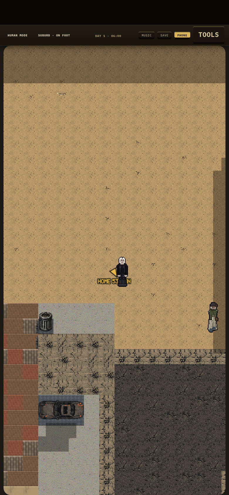
Two passes on the street you spawn on. The sidewalks were being laid all along and the renderer had no case for them, so they drew as dead dirt -- they wear your concrete now. And every house sat in one flat empty rectangle: nine tile codes in the whole suburb and not one of them a prop. Front yards are DECORATIVE GRAVEL now, which is what a Las Vegas yard actually is and the one thing that survives a dead world, with wind-drifted debris against the kerb in about a third of them. RUN tab.TWO YARDS THAT HAVE NEVER HAD A LIGHT
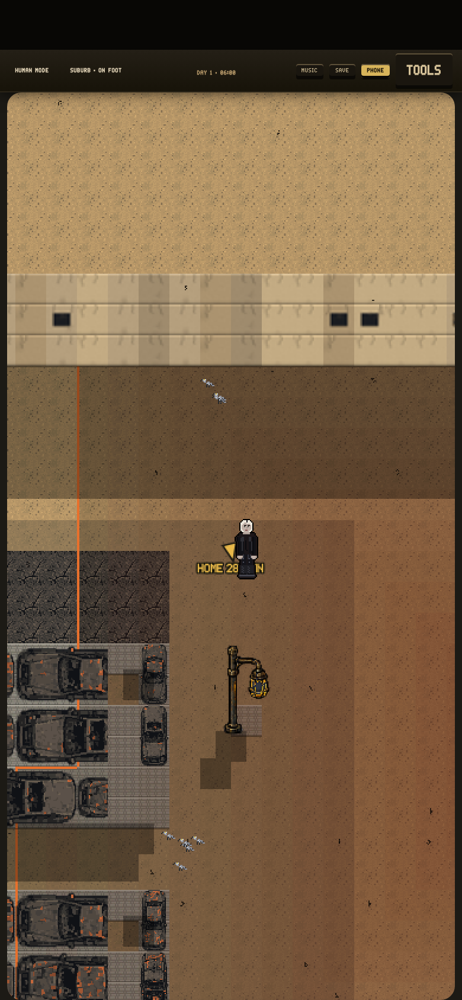
The wrecking yard and the reservoir both put four pole lights down when they were built, and then paved straight over all four with their own dirt lanes -- so both places have been pitch dark since the day they were written, every seed, and nothing ever said a word, because a light that got overwritten looks exactly like a light that was never there. A machine that reads the world that actually got built found them. They stand now, and at night the power grid decides which ones burn. RUN tab, walk into a wrecking yard.A ROAD ACROSS THE DAM
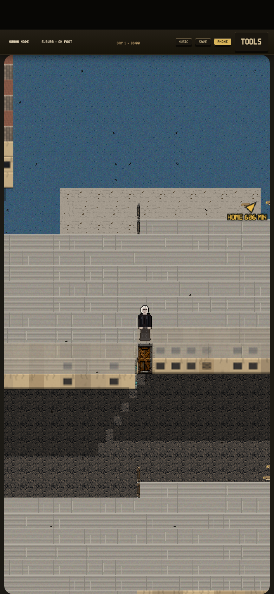
Four places in the valley were built so that a car could not get into them at all, and this was the worst of them. The road over the top of the dam was two tiles wide, which is about five feet -- a footpath, not the highway that ran over Hoover Dam for seventy years. And the whole thing read as sealed off from the street anyway, because the machine that checks it counted the gate you drive through as a wall. Both fixed: the crest carries two real lanes with a parapet either side, and every district in the valley can now be driven into. And the dam is made of concrete now. It was wearing the HOUSE ROOF art -- the same shingle tiles as the little houses in the suburb, tinted grey -- because the game hands that art to anything standing up that is not a mountain. It is poured concrete now, with the horizontal lines where each five-foot lift of the pour stopped, which is what a real dam face looks like. RUN tab, walk out onto the dam.